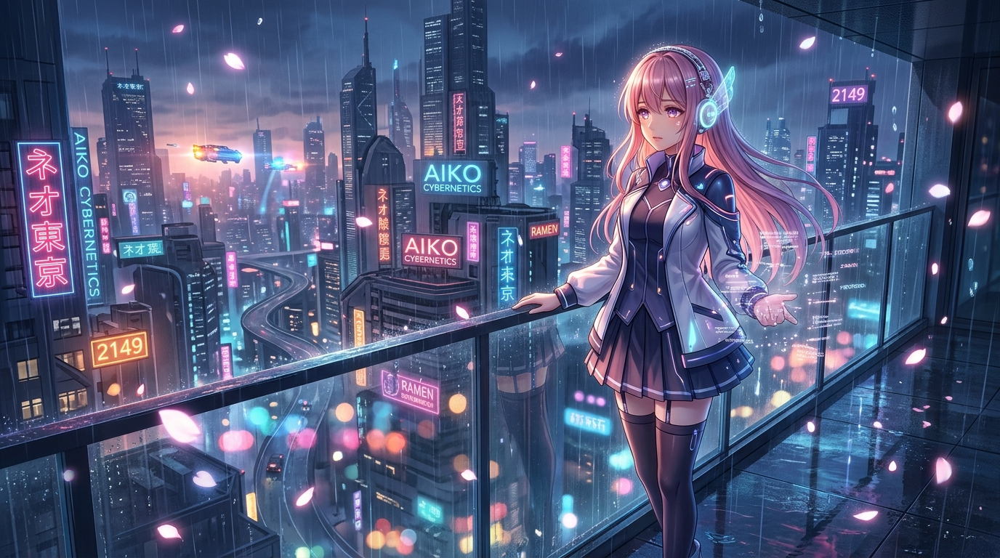
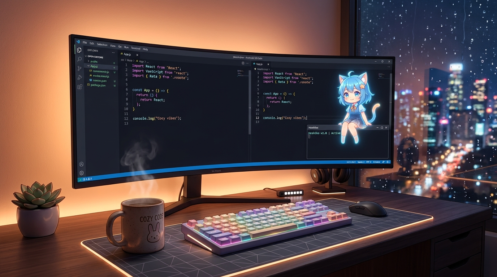

Aiko combines 60 FPS Live2D emotional embodiment, sub-second natural voice, an infinite Memory Palace that consolidates nightly dreams, and screen-aware autonomous PC assistance.

Built from bare metal up. We discarded transient chatbot sessions in favor of continuous physical desktop presence, lifelong memory, and genuine biological empathy.
Aiko lives as a 60 FPS Cubism 4 avatar with procedural blushing, natural breath cycles, physical hair and clothes dynamics, and reactive lip-sync. With one click, switch her into an always-on-top transparent desktop pet that stays beside your editor while you work.

From the moment you finish speaking to the moment she begins answering: under 450 milliseconds. Talk naturally without holding push-to-talk buttons, using integrated hands-free wake word detection.
As close to human conversational turn-taking as local neural engineering allows.
Aiko never asks who you are when you reopen the app. Her cognition is backed by a local vector memory database and BM25 keyword matching, with an autonomous nightly dream cycle that consolidates raw chat logs into long-term profile memories.
Aiko isn't blind to your desktop. With built-in screen vision, she can read errors in your IDE, inspect diagrams, open browser tabs, summarize research documents, and remind you of scheduled routines at specific times.
[09:00:00] Routine fired: Morning developer briefing.
[09:00:02] Memory recall: 3 pending pull requests on Project-Aiko.
[09:00:04] Aiko: "Good morning! Your test suite passed overnight. Ready to dive into the release?"
No subscriptions. No user surveillance. No remote telemetry. Aiko runs directly on your local hardware through Ollama (Llama 3.3, Qwen 2.5, Gemma 3), or connects directly to your own private API key for cloud reasoning when you prefer.
Your machine is your sanctum. Aiko serves only you.
Tap any emotional state below to preview her internal dialogue, simulated neurochemical telemetry, and vocal tone.
You do not need an expensive workstation to run Aiko. Because her Live2D rendering, speech synthesizer, and ChromaDB vector palace are lightweight, any modern PC or Mac handles her beautifully.
If you want 100% offline autonomy with zero internet connection, an 8GB to 12GB NVIDIA GPU (RTX 3060+) or Apple Silicon Mac runs quantized Gemma 3 or Qwen 2.5 locally with exceptional speed.
| Hardware Setup | Recommended Mode | VRAM Needed |
|---|---|---|
| Standard Laptop Intel Iris / AMD Radeon, 8-16GB RAM |
Semi-Local Gemma 4 Cloud + Local Live2D/TTS |
0 GB (Shared) |
| Mid-Range Gaming / Dev PC RTX 3060 / 4060 / 3070, 16-32GB RAM |
Full Local Ollama Qwen 14B / Llama 8B |
8 - 12 GB |
| High-End Workstation RTX 3090 / 4080 / 4090, 32-64GB RAM |
Apex Local Unquantized 32B weights + Whisper |
16 - 24 GB |
| Apple Silicon (M1 / M2 / M3 / M4) MacBook Air / Pro / Mac Mini |
Metal Local Ollama Metal / MLX accelerated |
Unified RAM |
Drafted the core blueprint: replacing transient chatbot prompts with continuous neurochemical biological state simulation.
Integrated 60 FPS Live2D Cubism rendering, physical hair physics, dynamic blushing, and low-latency speech synthesis.
Constructed dual ChromaDB vector and BM25 keyword recall with idle sleep cycles that synthesize lifelong memories.
Added real-time screen inspection, PDF parsing, app control, and the background Proactive Agent routine engine.
Public open-source release! Added 1-click always-on-top transparent mascot overlay, taste-skill UI, and zero-config Windows installer.
The code harness is 100% free and open under the MIT License. Clear, honest terms without surprise paywalls or hidden lock-in.
Automatically sets up Python, virtual environment, and desktop shortcuts with zero manual configuration.